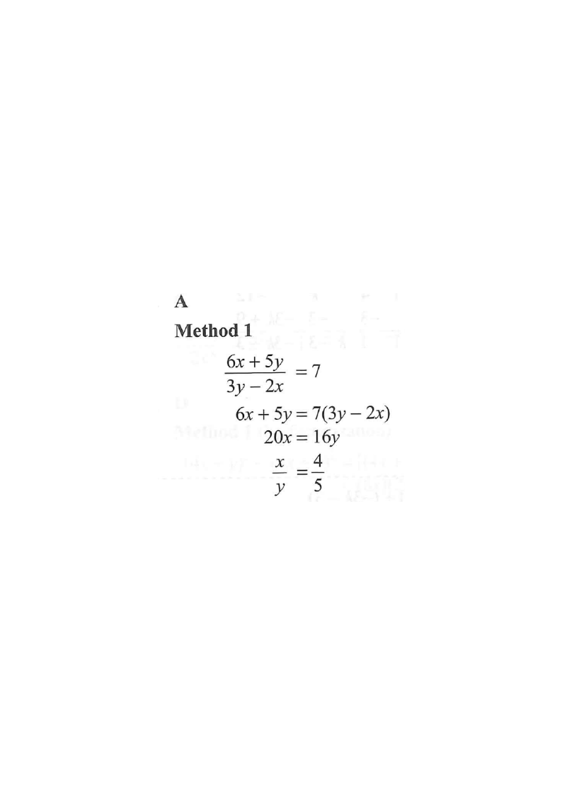

Given equation Clearing denominator Collecting terms Ratio result
HKDSE 2012 · Paper 2 · Q9
If $x$ and $y$ are non-zero numbers such that
\[
\frac{6x+5y}{\,3y-2x\,}=7,
\]
then
A. $4:5$
B. $4:13$
C. $5:4$
D. $13:4$

Figure (original exam diagram)
1
Step 1 — Clear the denominator
Multiply both sides by $(3y-2x)$ (which is non-zero since $x,y\neq 0$ and it is the denominator):
\[
\frac{6x+5y}{3y-2x}=7
\;\Longrightarrow\;
6x+5y = 7(3y-2x).
\]
Hint: cross-multiplying removes the fraction; keep the bracket on the right.
2
Step 2 — Expand the right-hand side
\[
6x+5y = 21y-14x.
\]
Hint: distribute the $7$ into each term of the bracket.
3
Step 3 — Collect like terms
Bring all $x$-terms to the left and all $y$-terms to the right:
\[
6x+14x = 21y-5y
\;\Longrightarrow\;
20x = 16y.
\]
Hint: moving a term across the $=$ sign changes its sign.
4
Step 4 — Form the ratio $x:y$
Divide both sides by $20y$ (valid because $y\neq 0$):
\[
\frac{20x}{20y}=\frac{16y}{20y}
\;\Longrightarrow\;
\frac{x}{y}=\frac{16}{20}=\frac{4}{5}.
\]
Hence
\[
x:y = 4:5.
\]
Hint: simplifying $16:20$ gives $4:5$ (both divided by 4).